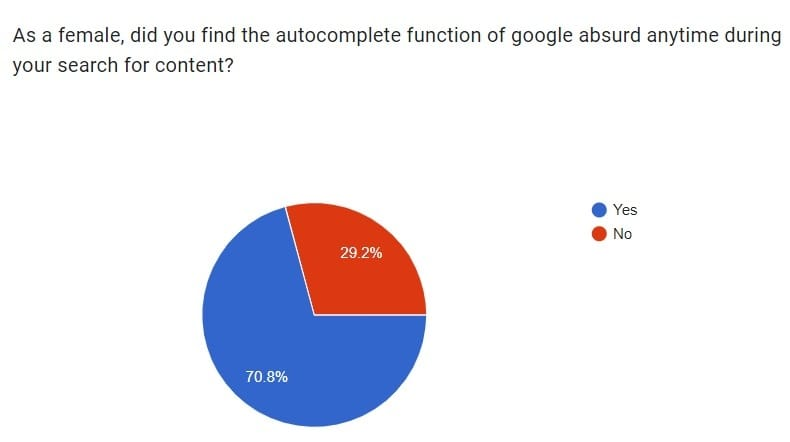
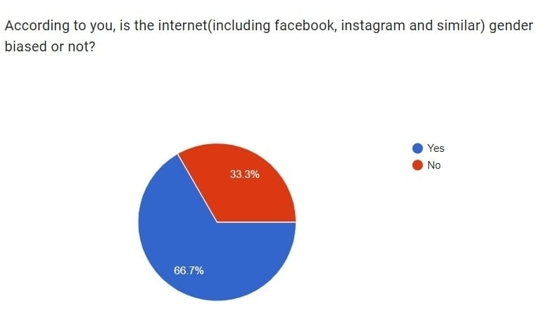
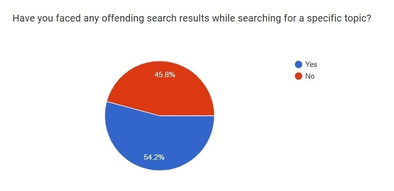

Search results differ from gender to gender, race to race and from community to community. These differences in search results have a huge impact as they are the reflection of society's views on different kinds of people. This is a result of the power of algorithms and the ways those digital decisions reinforce oppressive social relationships
Read MoreSearch results represent the most popular and most profitable ideas which circulate freely and hence can easily be normalized.The notion of search results as being objective and popular adds to the fact that racist and sexist search results are nothing but a mirror of people's beliefs as the users are the ones who raise the popularity or credibility of a term
Read MoreThere is clear evidence that proves that the internet privileges males and objectifies females. Many of the search results that popped up are a clear representation of the same. It just depicts that society sees men as an ideal spectator and women are designed to flatter him.
Read MoreGoogle search autosuggestions showed many sexist results when searched for specific things such as what women can,what women cannot or what women should do. Also,the result that is most popular rises to the top of the search results. It has to be known by everyone that search is a mirror of people's beliefs and the most popular search is the one that most people search for or type in or get information about.If most people type in about some sexist ideas then these results automatically occur as the top ranking search results. Another notable point is that people generally type in the search box according to the views they hold in the society.From all these it can be seen that the top ranking search results are according to the belief of people and many of the people hold various sexist ideas against women so it is believable as to why the search results are sexist. Similar is the case with minorities of a place.Much worse is the case of women who belong to these minorities.Because of these beliefs and search results,these marginalized people have been highly objectified and discriminated against.
The search engines exert power on their users by benefiting from their lack of knowledge of how the search results work and how they enter the top ranking. Also,the search engine keeps track of the search history of users to show relatable future results,this is a violation of privacy of the users as it is a clear case of invasion of privacy. For example, Google is a private business firm which depends on profits and revenue it gets from the advertising companies. So it prioritizes its clients over others. One of the commercialization and profit-making techniques of Google is providing free tools in exchange for private information of users and gets profit from this. This is against the privacy terms of the users. In this case the information of users is at risk. There has been much evidence where it has blocked sites of its competitors and promoted its properties to the top of the search pile. Like prioritizing Google maps over Mapquest,Youtube over other video streaming sites,Google images over flickr. Also,all these contents that include promoting their own properties,racial and sexist comments are highly profitable as these attract the attention of the majority of people. So, they leave out the interests of the much smaller community of marginalized people just for the profit and growth of the firm.
The main idea behind creating the web was that people can enter it without any race, gender issues and openly express their beliefs without fear of being singled out or fear of society. But many also forget the fact that the same web which has been created for the benefit of all kinds of people is now creating a problem for the marginalized people. It made people anything but immune to privilege and prejudice. It has failed to achieve its aim of making people immune to privilege. It is a fact that human participation in the web is mediated by a host of social, political and economic access points both locally and globally.